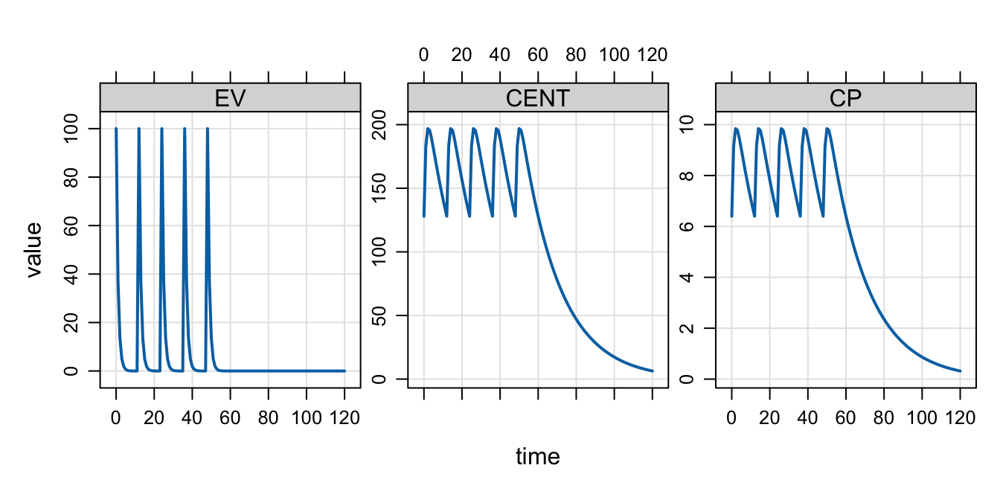
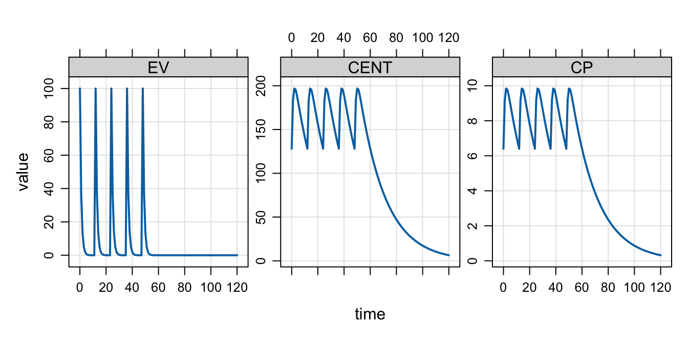
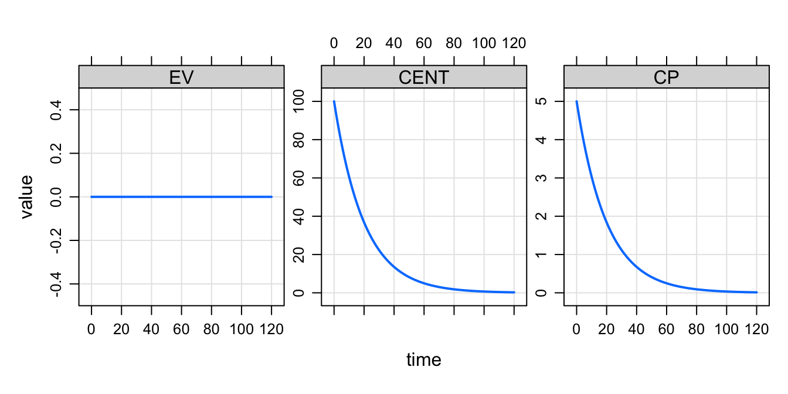

mod <- modlib("pk1", end = 120). Loading model from cache.dose <- ev(amt = 100, ii = 12, addl = 4, ss = 1)
mrgsim(mod, dose, recsort = 3) %>% plot()
Keep reading for all the details; I’m including this brief list of key items up front for your convenience.
ss_rtol and ss_atol arguments to mrgsim() to control the local error estimate when mrgsolve is finding steady statess_n to limit the number of doses that will be administered when advancing to steady state; if the number of doses exceeds ss_n then a warning is issued and mrgsolve moves onss_fixed = TRUE to silence the warning when ss_n is exceeded; you are essentially saying dose up to ss_n and then give up and move on without warningSS_ADVANCE in $ODE to check if the system is currently being advancedss_cmt in [ set ] (inside your model) to select the compartments to be considered when finding steady state; you might have better success / efficiency if you focus on key compartments (or exclude unhelpful compartments like a depot compartment)Within mrgsolve, the term “steady state” (SS) applies specifically to the pharmacokinetic dosing system and indicates that the rate of drug administration is equal to the rate of drug elimination. Steady state dosing can take the form of repeated intermittent doses (bolus or infusion, administered intermittently at a given dosing interval) or a continuous infusion administered to steady state.
The user can direct mrgsolve to advance the system to steady state for intermittent dosing by including ss=1 in an event object or input data set. For example:
mod <- modlib("pk1", end = 120). Loading model from cache.dose <- ev(amt = 100, ii = 12, addl = 4, ss = 1)
mrgsim(mod, dose, recsort = 3) %>% plot()
In this example, the ss=1 flag tells mrgsolve to advance the system to steady state under a dosing regimen of 100 mg every 12 hours (and then give a total of 5 doses). When using the ss=1 flag, the user is required to indicate the dosing interval (here every 12 hours) and additional doses are optional. Similar behavior can be achieved for intermittent infusions by setting the infusion rate.
A continuous infusion can be dosed to steady state by including the ss=1 flag, a value for rate (any positive rate or -1 if the rate is being modeled), and setting the dose amount (amt/AMT) to zero:
infus <- ev(amt = 0, rate = 5, ss = 1, cmt = "CENT")
mrgsim(mod, infus, recsort = 3) %>% plot()
Because CL is equal to 1 in this model, we see that the continuous (never-ending) infusion was started at steady state with a value of 5.
It’s important to recognize that SS is related to the PK dosing system; it is finding the state of the system after an infinite number of doses have been administered under a certain regimen. And this is essentially how mrgsolve goes about finding steady state: when the ss=1 flag is encountered, mrgsolve starts repeatedly administering doses and advancing the system to the next dose according to the inter-dose interval (ii). Once mrgsolve determines that the amounts in the system at any dose are the same as they were at the preceding dose, mrgsolve declares that SS has been achieved.
mrgsolve uses a local error estimate to determine the degree to which concentrations are changing or not changing between doses on the way to SS. This is determined by a relative tolerance parameter (ss_rtol) and an absolute tolerance parameter (ss_atol). As of mrgsolve version 0.10.3, these tolerances are distinct from the tolerances used for solving the differential equations (rtol and atol, respectively). Note that when advancing to SS in an ODE model, ss_rtol (the relative tolerance for determining SS) must be larger (less precise) than rtol (the relative tolerance used by the ODE solver). Once the difference between two trough concentrations is less than A\(_{trough}\) * ss_rtol + ss_atol, then the system is said to be at steady state. By default, this calculation is done for every single compartment in the model and all compartments have to meet this criteria before the system is said to be at steady state. So, increasing ss_rtol (say from 1e-8 to 1e-3) will also allow us to call it “good” with respect to steady state sooner.
Both tolerances for steady state are stored in the model object and can be set with the update method. For example,
mod <- house()
mod <- update(mod, ss_rtol = 1e-5, ss_atol = 1e-8)It was noted above that mrgsolve advances the system to steady state with a brute force approach: doses are repeatedly administered at a regular interval (for intermittent SS) until pre-dose concentrations are the same dose to dose. mrgsolve sets an upper limit (equal to 500) to the number of doses that will be administered before giving up on trying to find steady state. Once this maximum number of doses is exceeded, mrgsolve will issue a warning that steady state was not achieved and continue on with the problem. For example:
dose <- ev(amt = 100, ii = 12, ss = 1, VC = 800)
out <- mrgsim(house(), dose). Warning in (function (x, data, idata = no_idata_set(), carry_out = carry.out, : [steady_bolus] ID 1 failed to reach steady state
. ss_n: 500, ss_rtol: 1e-08, ss_atol: 1e-08Here, mrgsolve administered 500 doses and the pre-dose concentrations were still not similar enough to declare the system to be at steady state.
The maximum dose number can be set with the ss_n argument to mrgsim (or one of the variants; see ?do_mrgsim help topic). This number can be increased to prevent the warning:
out <- mrgsim(house(), dose, ss_n = 1000)Alternatively, the ss_fixed argument to mrgsim (see ?do_mrgsim) can be set to TRUE to silence the warning. In this case, up to ss_n doses will be administered and if SS is not achieved with that many doses, the problem will continue with no warning.
Sometimes it might be sufficient to only consider one compartment when determining SS (e.g. the central compartment in a PK model). Other times, it might be helpful to exclude a compartment when determining SS (e.g. a depot dosing compartment when concentrations can get very small toward the end of the dosing interval).
mrgsolve allows the user to identify compartments to include or exclude in determining SS. This is done through the ss_cmt option in $SET. To only consider the CENT compartment, write the following in the model file:
[ set ] ss_cmt = "CENT"This says to only look at the CENT compartment when determining SS.
Alternatively, you can exclude certain compartments like this:
[ set ] ss_cmt = "-GUT,DEPOT"This says to ignore the GUT and DEPOT compartments when determining SS.
As another example, you might want to exclude an accumulator compartment when calculating SS
[ set ] ss_cmt = "-AUC"
[ ode ]
dxdt_CENT = -kel * CENT;
dxdt_AUC = CENT/VC;This is just a partial model snippet, but it shows how you might exclude the AUC compartment when determining SS.
mrgsolve also provides an SS_ADVANCE indicator that is passed into $ODE and evaluates to true when the system is being advanced to steady state. So a better way to exclude the accumulator compartment from being considered for SS calculation would be this:
[ ode ]
dxdt_AUC = CENT/VC;
if(SS_ADVANCE) dxdt_AUC = 0;This code prevents the AUC compartment from changing during the advance to SS and the dose to dose difference in AUC will always be zero, effectively excluding this compartment from factoring into the SS determination. This should be the preferred approach to dealing with an AUC compartment.